Игра Heroes of Might and Magic II (HoMM II), выпущенная фирмой New Worlds Computing в ноябре 1996 года продолжает игру HоMM1, и является дальнейшим развитием идей игры King's Bounty, созданной в 1991 году той же фирмой. Существуют версии для DOS и Windows, а также ряд патчей, описанных в разделе " Чит-коды и баги". Игра чрезвычайно нетребовательна к ресурсам компьютера и прекрасно играет на любой современной машине (Для интересующихся историей скажем что процессор 486 DX-100 мгц (!) на 16 МБ RAM будет отличной конфигурацией ! ). В игре прекрасно подобрана цветовая гамма и даже не верится, что все это великолепие создано в 256 цветах! К сожалению все известные русификации страдают некоторыми багами (см. соответствующий раздел), поэтому изложение ведется применительно к английской версии игры.
Существует три вида игры: Standard game, Campaign game и Multi-Player game.
Поддерживаются четыре варианта многопользовательской игры:
Кампания - это цепочка из восьми миссий, выполняемых для одного из двух лордов: Archibald, или Roland. Подробное описание кампаний см. в разделе "Школа мастерства".
При стандартной игре прежде всего выбирается карта. Карты имеют четыре размера:(Small - Medium - Large - Extra-large), для выбора нужного размера из всего списка карт достаточно после выбора (Select) щелкнуть на соответствующем размере карты. Слева от названия карты - число игроков в игре и размер самой карты. Справа значками представлены дополнительные критерии победы и поражения. Если там нарисована голова в рыцарском шлеме - дополнительных критериев нет, надо разгромить все войска, захватить все города врагов и не дать врагам разгромить себя.
Дополнительными критериями победы бывают:
| Тип ресурса | Ресурсы игрока Easy | Ресурсы игрока Normal | Ресурсы игрока Hard | Ресурсы игрока Expert | Ресурсы игрока Impossible | Ресурсы компьютера Easy | Ресурсы компьютера Normal - Impossible |
| 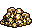 | 10000 | 7500 | 5000 | 2500 | 0 | 7500 | 10000 |
| 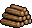 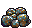 | 30 | 20 | 10 | 5 | 0 | 20 | 30 |
| 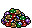 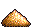 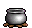 | 10 | 5 | 2 | 0 | 0 | 5 | 10 |
На уровне Hard AI будет атаковать вас только в том случае, если его армия имеет преимущество хотя бы в 40-60 Hit points над вашей. Кроме того ежедневный доход компьютера в золоте повышается на 10% и он получает по 1 единице Wood и Ore в день в качестве бесплатного бонуса.
На уровне Expert компьютер атакует вас, если вероятность его победы будет около 75%, а ежедневный доход компьютера в золоте повышается на 25% и он получает ежедневно по 1 единице всех ресурсов в качестве бесплатного бонуса.
При игре на Impossible компьютер атакует вас, если вероятность его победы будет около 90%, его ежедневный доход в золоте повышается на 100%, а бонус по ресурсам возрастает до 2 единиц всех ресурсов в день. Кроме того, при игре на Impossible в городах компьютера повышается прирост единиц, доступных для выпуска (см. таблицу). Количество дополнительных единиц показано в соответствии с их уровнем для каждой расы (прирост апгрейженных и неапгрейженных единиц одинаков), причем даже в неделю чумы (Plaque) в городах компьютера ПОЯВИТСЯ половина дополнительного прироста единиц (баг).
| Уровень\Раса | Sorceress | Barbarian | Warlock | Knight | Wizard | Necromanser |
| Level 1 | 6 | 8 | 6 | 9 | 7 | 7 |
| Level 2 | 3 | 4 | 4 | 4 | 3 | 3 |
| Level 3 | 2 | 3 | 2 | 3 | 2 | 2 |
| Level 4 | 2 | 2 | 1 | 2 | 2 | 2 |
| Level 5 | 1 | 1 | 1 | 2 | 1 | 1 |
| Level 6 | 1 | 1 | 1 | 1 | 1 | 1 |
Ресурсы - основа экономики вашего государства. Как известно, деньги решают все. Без золота вам не удастся нанять даже бедного мужика, а без ресурсов ничего не удастся построить. К чести создателей игры, особенности капитализма были учтены и в HoMM II появились рынки, на которых вы сможете производить обмен ресурсов (как тяжело было без них!). Кроме того, список объектов, приносящих ресурсы был значительно расширен. Некоторые объекты являются "комплексными" т.е. могут принести не только ресурсы, но и артефакты, а также опыт. Правда кое - где надо будет и повоевать.
| Вид | Название | Назначение |
| 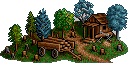 | Лесопилка | Дает 2 в день |
| 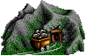 | Каменная шахта | Дает 2 в день |
| 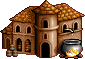 | Лаборатория | Дает 1 в день |
| 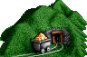 | Шахта серы | Дает 1 в день |
| Шахта кристаллов | Дает 1 в день |
| 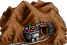 | Шахта драгоценностей | Дает 1 в день |
| 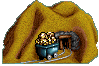 | Золотая шахта | Дает 1000 в день |
| 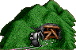 | Заброшенная шахта | После победы над случайным количеством духов получаете золотую шахту |
| 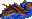 | Мусор | Однократно с вероятностью 25%: (500 +10 ) или (200 +5 ) или (5 ) или ничего |
| Костер | Однократно (N единиц случ.ресурса + N*100 ), где N бывает равно 4, 5 или 6 | |
| 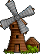 | Ветряк | 2 единицы случайного ресурса раз в неделю |
| 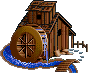 | Мельница | 1000 еженедельно |
| 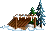 | Навес | Для первого посетившего героя 1-4 единицы случайного ресурса однократно |
| 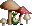 | Лепрекон | Еженедельно можно с равными шансами получить 500 или 5 |
| 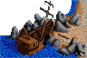 | Заброшенный корабль | Доступен с моря. После победы над 200 Skeletons однократно получаем 5000 Повторное посещение понизит мораль |
| 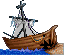 | Заброшенный корабль | Доступен с суши . Сражаемся и получаем: 10 Ghosts=1000 , 15 Ghosts = 2000 , 25 Ghosts= 5000 , 50 Ghosts =2000 +случайный артефакт. Повторное посещение понизит мораль |
| 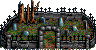 | Кладбище | После победы над 5x20 Mutant Zombies получаем 1000 +артефакт. Повторное посещение понижает мораль |
| 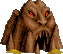 | Нора демона | После победы над слугами демона (8 Earth Elementals) однократно дают 2500 , если выбираем бой с демоном (сражаться не надо) варианты: тpебуют выкупить геpоя за 2500 , иначе он теряется; или дают 1000 exp; или (1000 exp + 2500 ); или (1000 exp +случайный артефакт) |
| Повозка | Для первого посетившего героя: 2-5 единиц случ.ресурса, или случайный артефакт, или ничего | |
| 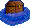 | Сундук | 20% ничего, 70% (1500 ), 10% (1000 +артефакт) |
| Сфинкс | Правильный ответ на загадку дает ресурсы и (или) артефакт, назначенные автором карты (может быть не назначено ничего), неправильный-приводит к гибели героя | |
| 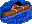 | Тонущий матрос | Случайный артефакт |
| 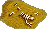 | Скелет | Иногда можно найти случайный артефакт |
| 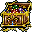 | Сундук | 31% (2000 или 1500 exp), 32% (1500 или 1000 exp), 32% (1000 или 500 exp), 5% случайный артефакт |
| 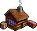 | Вольный рынок | Рынок, с ценами эквивалентными наличию трех marketplace у игрока |
| Действие\Количество рынков | 1 | 2 | 3 | 4 | 5 | 6 | 7 | 8 | 9+ |
| Обмен равнозначных ресурсов | 1\10 | 1\7 | 1\5 | 1\4 | 1\4 | 1\3 | 1\3 | 1\3 | 1\2 |
| Обмен на | 1\5 | 1\4 | 1\3 | 1\2 | 1\2 | 1\2 | 1\2 | 1\2 | 1\1 |
| Обмен на | 1\20 | 1\14 | 1\10 | 1\8 | 1\7 | 1\6 | 1\5 | 1\5 | 1\4 |
| Продажа | 25 | 37 | 50 | 62 | 74 | 87 | 100 | 112 | 124 |
| Продажа | 50 | 74 | 100 | 124 | 149 | 175 | 200 | 224 | 249 |
| Покупка | 2500 | 1667 | 1250 | 1000 | 834 | 715 | 625 | 556 | 500 |
| Покупка | 5000 | 3334 | 2500 | 2000 | 1667 | 1429 | 1250 | 1112 | 1000 |
Дальность перемещения героя по суше зависит от скорости самого медленного отряда в его армии. См. таблицу:
| Скорость существа | Расстояние |
| Very slow | 10 |
| Slow | 11 |
| Average | 12 |
| Fast | 13 |
| Very fast | 14 |
| Ultra fast | 15 |
Количество очков движения, даваемых герою в начале хода на море, не зависит от скорости отрядов армии героя и всегда равно 15. К этому добавляется бонус навыка Navigation (Basic=4,5; Advanced=9,5; Expert=15) а также бонусы некоторых артефактов и всех строений lighthouse, принадлежащих игроку. Погрузка на корабль и высадка с корабля забирают все оставшиеся у героя на текущий день единицы перемещения.
Дальность хода героя определяется на начало игрового дня. Изменение состава армии (замена тихоходных монстров на быстроходных и наоборот) и добавление артефактов в этот день уже не повлияют на дальность хода. Однако посещение объектов на карте может увеличить запас хода героя в текущий день.
Пересеченная местность требует более одного очка движения на преодоление одной клетки игрового поля. Движение по дорогам, наоборот, снижает затраты на перемещение. Так что "ходите по дорогам и берегитесь болот"! В таблице указана стоимость (в очках движения) шага по горизонтали и вертикали (шаг по диагонали всегда в 1,5 раза дороже) в зависимости от типа местности и наличия вторичного навыка Pathfinding.
| Тип местности | Без навыка | Базовый | Продвинутый | Экспертный |
| Пустыня | 2 | 1,75 | 1,50 | 1 |
| Болото | 1,75 | 1,5 | 1,25 | 1 |
| Снег | 1,75 | 1,5 | 1 | 1 |
| Пляж | 1,25 | 1 | 1 | 1 |
| Скалы | 1,25 | 1 | 1 | 1 |
| Лава | 1 | 1 | 1 | 1 |
| Трава | 1 | 1 | 1 | 1 |
| Вода | 1 | 1 | 1 | 1 |
| Земля | 1 | 1 | 1 | 1 |
| Дорога | 0,75 | 0,75 | 0,75 | 0,75 |
| Вид | Название | Назначение |
| Беседка | +1000 exp.для каждого героя однократно | |
| Лагерь наемников | Атака +1 для каждого героя однократно | |
| 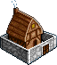 | Форт | Защита +1 для каждого героя однократно |
| 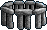 | Стоунхендж | +1 Spell Power для каждого героя однократно |
| 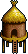 | Шаманская хижина | Знания +1 для каждого героя однократно |
| Дерево знаний | Однократно переводит каждого героя на следующий уровень, в 34% бесплатно, в 33% за 2000 , в 33% за 10 | |
| 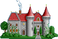 | Ханаду | Герой, достигший 10 уровня или (Level=4 + Diplomacy = Expert, либо {6+Advanced}, либо {8+Basic}) однократно получает +1 ко всем четырем основным статистикам. |
| 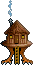 | Домик ведьм | Однократно учит каждого героя одному вторичному навыку на уровне Basic, если есть место под Secondary Skill, но таковой способности нет. Никогда не встречаются Necromancy и Leadership. |
| 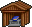 | Часовня 1 круга | Герой, имеющий книгу магии может выучить заклинание 1 уровня |
| Часовня 2 круга | Герой, имеющий книгу магии может выучить заклинание 2 уровня | |
| Часовня 3 круга | Герой, имеющий книгу магии и базовую мудрость может выучить заклинание 3 уровня | |
| 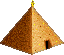 | Пирамида | Мудрец-эксперт после победы над 2x10 Vampire Lords и 3x10 Royal Mummies может однократно получить одно случайное заклинание 5 уровня. Повторное посещение понизит удачу на -2. |
Армия героя должна включать как минимум один отряд, максимум - пять. (В результате бага редактора карт в принципе можно поставить на карту героя без армии, но только до первого боя). Кроме того, герой остается без армии в случае, если в результате боя с применением вызова элементалов герой сдается врагу (Белый флаг), а к этому моменту остаются в живых только призванные элементалы и ни одной "своей" единицы. Вы сможете выкупить его в замке без армии.
Герои могут обмениваться войсками и артефактами в экране встречи героев - для этого достаточно подойти одним героем к другому. Для разделения армии между героями или героем и гарнизоном нужно во время переноса удерживать клавишу Shift. Для роспуска отряда достаточно на его экране нажать кнопку Dismiss. Герои могут нанимать армию в городах и замках, а также во внешних жилищах монстров на местности. Кроме того, к герою могут присоединиться нейтральные отряды, находящиеся на карте. Часть нейтралов ("лояльные") присоединяется даром, часть - только за деньги. Тип определяется случайно в начале игры, и может быть изменен только при рестарте. Только за деньги присоединяются нейтралы, участвовавшие в битве, а также те, для которых в Редакторе была задана численность (привидения и все элементалы никогда не присоединяются).
Условия присоединения лояльных:
| Вид | Название | Назначение |
| 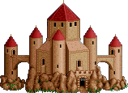 | Город драконов | После победы над 3x1 зеленых, 1 красным, 1 черным драконами можно еженедельно нанимать 1-2 Red Dragons (за деньги) |
| 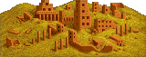 | Город мертвых | После победы над 2x20 Zombies, 2x5 Vampire Lords и 5 Power liches можно еженедельно нанимать 2-4 Power liches(за деньги) |
| 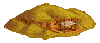 | Раскопки | Каждую неделю можно бесплатно нанять скелетов |
| 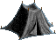 | Палатка в пустыне | Каждую неделю можно нанять кочевников (за деньги) |
| 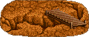 | Мост троллей | После победы над 2x4 War trolls и 3x4 trolls каждую неделю можно нанять троллей (за деньги) |
| 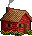 | Домик лучников | Каждую неделю можно бесплатно нанять лучников |
| 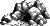 | Пещера | Каждую неделю можно бесплатно нанять кентавров |
| 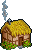 | Домик гномов | Каждую неделю можно бесплатно нанять гномов |
| Хижина гоблинов | Каждую неделю можно бесплатно нанять гоблинов | |
| 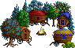 | Табор | Каждую неделю можно нанять воров (за деньги) |
| 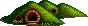 | Нора хоббитов | Каждую неделю можно бесплатно нанять хоббитов |
| 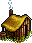 | Изба мужика | Каждую неделю можно бесплатно нанять мужиков |
| 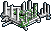 | Руины | Каждую неделю можно нанять медуз (за деньги) |
| 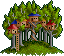 | Город на деревьях | Каждую неделю можно нанять фей (за деньги) |
| Дом на дереве | Каждую неделю можно бесплатно нанять фей | |
| Сторожевая башня | Каждую неделю можно бесплатно нанять орков | |
| Лампа | Можно нанять 2-4 джинна за 650 и 1 . После покупки всех джиннов лампа пропадает. | |
| Литейная | Бесплатный апгрейд Pikemen, Swordsmen, Iron Golems | |
| Форт на горе | Бесплатный апгрейд Orcs, Ogres, Dwarves |
| Few | 1 - 4 |
| Several | 4 - 9 |
| Pack | 10 - 19 |
| Lots | 20 - 49 |
| Horde | 50 - 99 |
| throng | 100 - 249 |
| Swarm | 250 - 499 |
| Zound | 500 - 999 |
| Legion | 1000 и более |
Подробно все монстры описаны в соответствующей главе. Здесь мы остановимся только на их общих характеристиках, которые мы видим на экране монстра.
| Attack Skill | Навык нападения, число в скобках с учетом навыка героя. |
| Defense Skill | Навык защиты, число в скобках с учетом навыка героя. |
| Shots Количество оставшихся выстрелов для стрелков, если числа нет - значит, монстр не стреляет | |
| Damage | Величина повреждений наносимых монстром |
| Hit Points | Показывает максимальное количество здоровья. |
| Hit Points Left | В бою показывает оставшееся количество здоровья у раненых юнитов. |
| Speed | Показатель скорости монстра (см. ниже). |
| Morale | Показатель морали (см. ниже) |
| Luck | Показатель удачливости (см. ниже) |
Показатель скорости (Speed) оказывает влияние на последовательность хода отрядов в бою а также на величину их перемещения по полю боя и на количество очков движения героя по карте. Скоростей всего 9. Crawling, Very Slow, Slow, Average, Fast, Very Fast, Ultra Fast, Blazing, Instant. Причем Crawling, Blazing и Instant изначально не свойственны ни одному монстру и появляются только как результат наложения магии. А именно:
| Исходная скорость | Slow | Haste |
| Very Slow | Crawling | Average |
| Slow | Very Slow | Fast |
| Average | Very Slow | Very Fast |
| Fast | Slow | Ultra Fast |
| Very Fast | Slow | Blazing |
| Ultra Fast | Average | Instant |
Morale (мораль) - способность отряда иногда в течение одного раунда боя атаковать вторично (если величина морали положительная) или не атаковать вообще (если величина морали отрицательная). В численном выражении мораль принимает значения от -3 до +3, (в порядке возрастания): Treason, Awful, Poor, Normal, Good, Great, Blood.
На мораль войск оказывают влияние следующие факторы:
Удача (Luck) - величина, характеризующая способность отряда в сражениях иногда в 2 раза увеличивать (или уменьшать, если она отрицательна) наносимый им damage (если отряд бьет по нескольким подразделениям одновременно, изменяется только damage, наносимый непосредственно атакуемому противнику). В численном выражении удача принимает значения от -2 до +3, (в порядке возрастания): Awful, Bad, Normal, Good, Great, Irish (В структуре игры есть место для значения Luck=(-3) с названием Cursed соответственно, но на практике это значение не может быть получено). Войска, сражающиеся без героя, имеют Normal luck, за исключением случая, когда они обороняют город Sorceress с построенной Rainbow (luck +2). Удача отрядов героя совпадает с его одноименной характеристикой, которая показывается в экране героя. Там же можно узнать, что именно повлияло на удачу героя. Это, кроме Rainbow, могут быть вторичный навык Luck, артефакты (см. соответствующие разделы) и посещение строений на местности (см таблицу далее). Уменьшает luck (на 2) только посещение разграбленной Пирамиды.
| Вид | Название | Назначение |
| Кольцо удачи | Удача +1 в следующей битве | |
| Фонтан | Удача +1 в следующей битве | |
| Идол | Удача +1 в следующей битве | |
| Буй | +1 морали в следующей битве | |
| Храм | +1 морали в следующей битве | |
| Источник | До конца дня +4 пункта передвижения, +1 морали в следующей битве. Возможно повторное посещение в тот же день ПОСЛЕ БИТВЫ. | |
| Оазис | До конца дня +8 пунктов передвижения,+1 морали в следующей битве. Возможно повторное посещение в тот же день ПОСЛЕ БИТВЫ. | |
| Маяк | Каждый маяк дает +5 очков передвижения на море каждому герою | |
| Колодец | Раз в день восстанавливает очки магии до максимума для каждого посетившего героя | |
| Артезианский колодец | Дает герою двухкратное количество очков магии. Имеет две точки посещения, каждая из которых может быть посещена один раз в неделю. | |
| Водоворот | Переносит героя в другой случайно выбранный водоворот. Часть армии может утонуть. Последняя единица последнего отряда не исчезает. | |
| Телепортинг | Переносит героя к другому случайно выбранному такому же телепортингу | |
| Дорожный знак | Показывает текст, написанный автором карты | |
| Бутылка | Показывает текст, написанный автором карты | |
| Оракул | Показывает информацию о противниках | |
| Обсерватория | Обзор 20 клеток от вышки | |
| Карты Магеллана | За 1000 открывается вся поверхность моря | |
| Обелиск | Открывает часть карты-загадки |
Для сравнения силы монстров служит таблица, приведенная ниже. Сила всех монстров выражена в "мужиковом эквиваленте" т.е " в мужиках". Данные значения определяют возможность присоединения нейтралов, выбор цели для защитных башен замков, порядок ударов войск компьютерных противников и пр.
| Sorceress | Barbarian | Warlock | Wizard | Neutral |
| Sprite 3.905 | Goblin 3.3 | Centaur 4.665 | Halfling 4.06 | Rogue 5.36 |
| Dwarf 15.15 | Orc 9.06 | Gargoyle 17.545 | Boar 14.935 | Nomad 24.39 |
| Battle dwarf 21.695 | Orc chief 15.51 | Griffin 33.36 | Iron golem 28.815 | Air elemental 42.786 |
| Elf 16.785 | Wolf 26.2 | Minotaur 53.06 | Steel golem 40.12 | Fire elemental 45.484 |
| Grand elf 19.395 | Ogre 32.27 | Minotaur King 68.24 | Roc 52.695 | Water elemental 51.212 |
| Druid 39.09 | Ogre lord 62.725 | Hydra 87.21 | Mage 58.635 | Earth elemental 52.484 |
| Greater druid 43.27 | troll 58.21 | Green dragon 550 | Archmage 74.815 | Ghost 46.818 |
| Unicorn 81.875 | War troll 70.7 | Red dragon 695.7857 | Giant 290.55 | Medusa 59.965 |
| Phoenix 306.4 | Cyclops 183.6 | Black dragon 852.75 | Titan 694.9 | Genie 172.48 |
| Knight | Necromanser |
| Archer 9.4286 | Skeleton 6.15 |
| Ranger 14.0172 | Zombie 9.39 |
| Pikeman 17.9643 | Mutant Zombie 15.33 |
| Veteran Pik 24.9583 | Mummy 26.3 |
| Swordsman 34.2368 | Royal mummy 32 |
| Master Swordaman 40.8913 | Vampire 51.06 |
| Cavalry 55.4333 | Vampire Lord 74.575 |
| Champion 68.85 | lich 62.695 |
| Paladin 142.5 | Power lich 79.545 |
| Crusader 176.3571 | Bone Dragon 355.875 |
В HoMM 2 герои перестали отсиживаться в палатках и наконец-то появились на поле боя. После щелчка мышкой по фигурке всадника вы сможете применять магию (см. соотв. раздел) а также бежать или сдаться врагу, если дела плохи. В обоих случаях герой сбегает с поля боя и может быть нанят вновь со всеми его артефактами и с полным дневным запасом очков хода (Очки магии не восстанавливаются). Только в случае сбегания теряются все его войска, и при найме у него будет стандартный стартовый набор отрядов, сответствующий типу героя, а при сдаче он сохраняет армию, уплатив противнику некоторую часть ее денежной стоимости (при этом учитываются вызванные элементали и Mirror Images, хоть они и пропадают). Эта часть составляет 50% без дипломатии, 40% при Basic, 30% при Advanced и 20% при Expert Diplomacy. Кроме того, наличие у героя артефакта Statesman's Quill (Перо) дополнительно снижает стоимость сдачи в 5 раз. Сбежать можно только вне города, сдаться - только вражескому герою или капитану. В начале каждой недели герои, имеющиеся для найма в замках, меняются. Поэтому не тяните с выкупом нужного героя. Кроме того, если на одном ходу у вас сбежит или сдаcтcя более двух героев, то они также будут для вас потеряны.
Количество убитых при атаке вражеских единиц зависит от наносимых атакующим отрядом повреждений (Damage), при атаке эта величина пишется внизу экрана. Узнать число убитых можно, поделив Damage на количество очков здоровья атакуемых. При этом целая часть полученного числа и будет число убитых. Остаток от деления накапливается, т. е. отряд становится "раненым". Следует отметить, что тролли и Vampire Lords могут "восстанавливать" повреждения - раненые тролли в конце хода, а Лорд Вампиры - когда убивают врага. Расчет повреждений при атаке производится следующим образом:
Из атаки нападающего подразделения (Attack1) вычитается защита атакуемого (Defense2) с учетом всех бонусов:
Х=Attack1-Defense2
Если эта разность положительна, то повреждение, наносимое каждой единицей атакующего отряда, рассчитывается по формуле
Damage1*(1 + 0.1*Х)
где Х не может принимать значение более 20 (т.е. имеет предел 20).
Для отрицательных Х формула имеет вид
Damage1*(1 + 0.05*Х)
где Х не может принимать значение меньше чем -14 (т.е. имеет предел -14).
Здесь Damage1 - случайная величина, с равными вероятностями принимающая целые значения от минимально возможного до максимального для данного отряда (т.е. если у атакующего отряда damage 2-4, то возможны значения 2, 3 и 4, каждое с вероятностью 1/3). На damage1 оказывают влияние заклинания: Bless, Mass Bless, Cursе, Mass сurse, делая эту величину максимальной или минимальной соответственно. Далее повреждения от отдельных единиц отряда суммируется и результат округляется в большую сторону.
Повреждения, наносимые стреляющими отрядами уменьшаются вдвое при стрельбе по отрядам, защищенным стенами замка (что показывается курсором в виде сломанной стрелы), или в случае, когда стреляющий отряд (За исключением Mage, Archmage, Titan) дерется врукопашную. Также на наносимый выстрелами damage влияют вторичный навык героя Archery, заклинания Shield, Mass Shield, и артефакт Golden Bow.
Некромансерские (undead) отряды обладают рядом специфических особенностей:
Они всегда имеют мораль Normal
Bone dragons снижают мораль отрядов противника
На них не действуют заклинания Bless, Mass Bless, Curse Mass Curse, Paralyze, Blind, Berserker и Hypnotize.
Для борьбы с ними предназначены специальная магия Holy Word и Holy ShoutDeath RippleDeath Wave, а также чрезвычайно эффективное оживляющее заклинание Animate Dead (Аналог Resurrect true). Герой, имеющий вторичный навык Necromancy после выигранной битвы получает (при наличии для них места) скелетов в количестве определенного процента от численности убитых в бою войск врага (считая вызванных элементалей и Mirror Images, и не считая выросших за время битвы ghosts), равного уровню некромантии героя - 10% при Basic, 20% при Advanced, 30% при Expert.
Некоторые монстры обладают возможностью применять те или иные заклинания. Однако это носит полностью случайный характер:
Во время осады города, его стены (если построен замок) защищают осаждаемые войска от агрессора. У осаждающего имеется катапульта, которая, стреляя раз за разом, сносит случайные части стены и, постепенно, пробивает бреши через которые могут пройти войска. Если в городе не построен замок, то кaтaпyльта нe иcпoльзyютcя. Koличecтвo выcтpeлoв из кaтaпyльты в одном раунде зaвиcит oт нaличия навыка Ballistics и нaличия apтeфaктa Ballista. Kaтaпyльтy yничтoжить нeвoзмoжнo. Катапульта нe yпpaвляeтcя игроком и обстреливает цели в такой последовательности: (пepexoд к cлeдyющeмy пyнктy пpoиcxoдит тoлькo пocлe пoлнoгo yничтoжeния пocтpoeк пpeдыдyщeго пyнкта)
В замке имеется главная (и могут быть отстроены две боковые) стрелковые башни, Damage которых зависит от количества построек в городе и уровня гильдии магов. Главная башня стреляет как X archers, где X - число возведенных в замке построек без учета апгрейдов, включая собственно Castle, и с учетом построенных уровней Mage Guild. Каждая из боковых башен стреляет в два раза слабее.
Победив, наконец врагов вы можете попасть в список лучших игровых результатов (High Scores). Читеры получат запись "Cheater". Количество очков, которые вы получите за прохождение карты зависит от параметров самой карты (сложности и размера), выбранного уровня сложности игры и количества игровых дней. Функция эта состоит из 5 прямолинейных участков, каждый из которых описывается своей формулой (см. ниже). Для реальной (не шахтерской) турнирной игры на скорость (не превышающей 44 дня для S; 60 дней для M; 75 дней для L; 100 дней для XL карт) формула имеет вид:
Очки = R*(200 - [(N-1)*K])
N - количество затраченных дней
R - рейтинг (В процентном выражении его можно увидеть в экране "Информация о сценарии" в игре.)
K - коэффициент размера карты, равный 1,4 для Small; 1 для Medium; 0,8 для Large; 0,6 для Extra Large
Рейтинг R зависит от стартовых условий и сложности карты. Для Easy/Easy он равен 0,5; усложнение карты дает {+0,2; +0,4; +0,8}, ужесточение начальных условий {+0,3; +0,5; +0,7; +0,9}.
| Difficulty\Level | Easy | Normal | Hard | Expert | Impossible |
| Easy | 0,5 | 0,8 | 1,0 | 1,2 | 1,4 |
| Normal | 0,7 | 1,0 | 1,2 | 1,4 | 1,6 |
| Hard | 0,9 | 1,2 | 1,4 | 1,6 | 1,8 |
| Expert | 1,3 | 1,6 | 1,8 | 2,0 | 2,2 |
| Размер карты | Игровое время (дни) | ||||
| Small | 1-44 | 45-85 | 86-256 | 257-428 | 429 и далее |
| Medium | 1-60 | 61-120 | 121-360 | 361-600 | 601 и далее |
| Large | 1-75 | 76-150 | 151-450 | 451-750 | 751 и далее |
| Extra Large | 1-100 | 101-200 | 201-600 | 601-1000 | 1001 и далее |
| Формула | R*(200-(N-1)*k) | R*(170-((N/2)*k)) | R*(140-((N/4)*k)) | R*(95-((N/8)*k)) | 20*R (не меняется) |
В Кампаниях подсчет очков не производится, а результат идет на дни, причем в отличие от отдельных карт при победе в сценарии кампании во время хода компьютера между N и N+1 днями, в результат пойдет N.